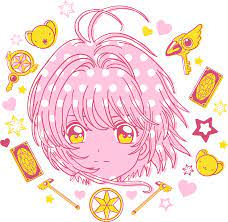

Exercicio
1 - Crie uma lista das pessoas que você já fez amizade na Trybe.
Ninguém, eu sou uma loba solitária
2 - Adicione uma imagem que venha de uma URL externa.
3 - Adicione uma imagem que está no seu computador, local.
